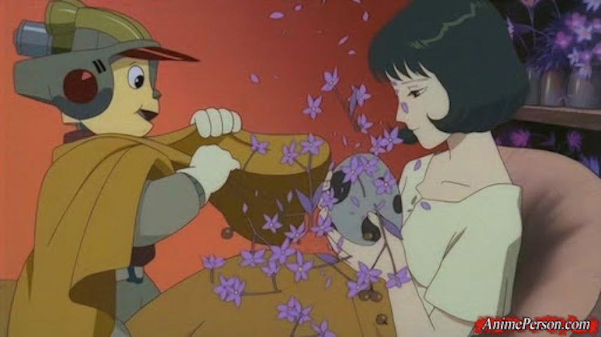

Es una película dirigida y escrita por Adam Elliot, trata sobre una amistad entre un señor americano con sobrepeso y autismo llamado Max y una niña australiana con muchas inseguridades y pocos amigos, que llevan una amistad por correo, cada uno con su visión de la vida y forjando una bonita amistad. Me gusta porque habla de las amistades improbables y como dos personas desconocidas encuentran una familia entre desconocidos de lugares lejanos.
Es una película dirigida por Robert Zemeckis en 1988 que se erige como una obra verdaderamente maravillosa en el panorama cinematográfico. Esta película es un ejemplo excepcional de cómo se puede combinar de manera magistral la acción real con los dibujos animados, creando una experiencia visual que asombra y fascina a los espectadores. La técnica híbrida utilizada en esta obra no solo es sorprendente, sino que también muestra una innovación sin precedentes en la industria del cine, logrando un equilibrio perfecto entre la realidad y la fantasía. Uno de los aspectos más notables de la película es su capacidad para rendir un homenaje significativo a los clásicos dibujos animados que tantos de nosotros hemos disfrutado a lo largo de los años. Cada escena está impregnada de referencias nostálgicas que evocan recuerdos entrañables de personajes icónicos y sus aventuras memorables. Esta conexión con el pasado no solo atrae a quienes crecieron con estos dibujos animados, sino que también introduce a nuevas generaciones en un estilo artístico y narrativo que ha dejado una huella imborrable en la cultura popular.Sin embargo, lo que realmente distingue a esta película es su intrincada historia de detectives, que se desarrolla en un mundo lleno de intriga y misterio. A diferencia de muchas producciones que están claramente dirigidas a un público infantil, esta trama aborda temas y situaciones que son mucho más complejos y maduros. Esto permite que los espectadores se sumerjan en un relato que no solo entretiene, sino que también invita a la reflexión sobre cuestiones más profundas y matizadas. La interacción entre los personajes, las decisiones que deben tomar y los dilemas morales que enfrentan añaden una capa de profundidad a la narrativa que seguramente resonará con un público más adulto.En definitiva, esta película no solo es un tributo a un estilo artístico querido y apreciado, sino que también es una exploración fascinante de un género que trasciende lo superficial. A través de su innovadora combinación de acción real y animación, junto con su rica narrativa de detectives, se convierte en una obra maestra que se mantiene relevante y cautivadora a lo largo del tiempo. Es, sin lugar a dudas, una experiencia cinematográfica que merece ser celebrada y disfrutada por todos.
En realidad esto es una película muy simple, contar una aventura de bob esponja, pero creo que tiene los mejores chistes de la franquicia aun que sea muy simple logra ser emotiva y dar un mensaje, tiene muchos de los mejores momentos de la franquicia y ninguna de sus secuelas la ha logrado desbancar.
Wes Anderson es quien dirige esa película, es muy bella con su animación stop motion, trata sobre el señor zorro volviendo a sus andadas de robar gallinas, pero se topa con beagis, bunce y beans los mayores empresarios de la zona, señor zorro esta decidido de robar todo lo suyo. La película tiene el mensaje de que no podemos huir de nosotros mismos y tenemos que abrazar lo que somos.
Es la clásica historia de Pinocho, pero con un mensaje sobre la vida y la muerte, a ambas las tenemos que abrazar por que la vida se vive y la muerte llegara, también es una película que habla de nuestro libre albedrio, ¿que es lo que no hace estar vivos?.
Es otra versión de Pinocho, pero esta enfocada en que es lo que nos hacer seres humanos, Palme (el pinocho en turno) se obsesiona con querer ser un humano, en ese lapso tiene emociones buenas, malas y erráticas. ¿Eso no hace humanos? O solo es un ser artificial fallando?
